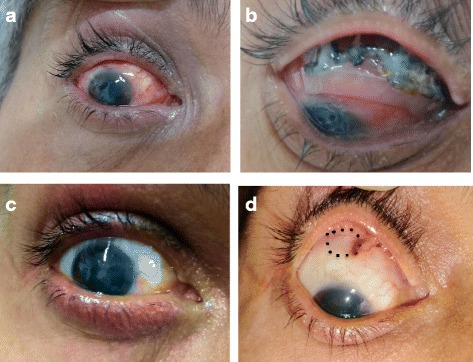
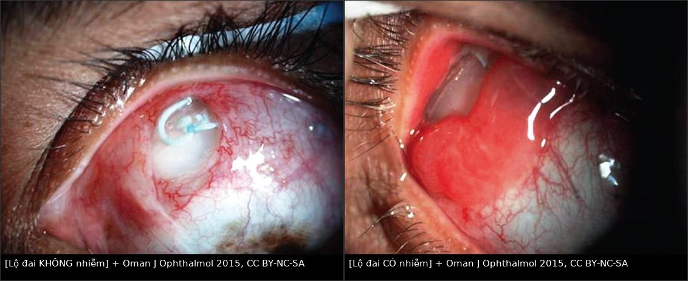
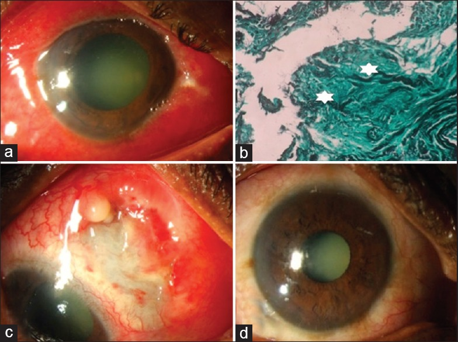
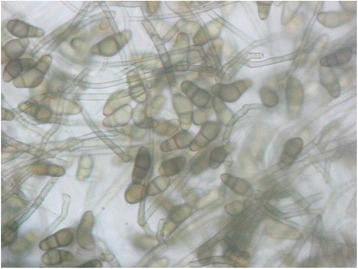
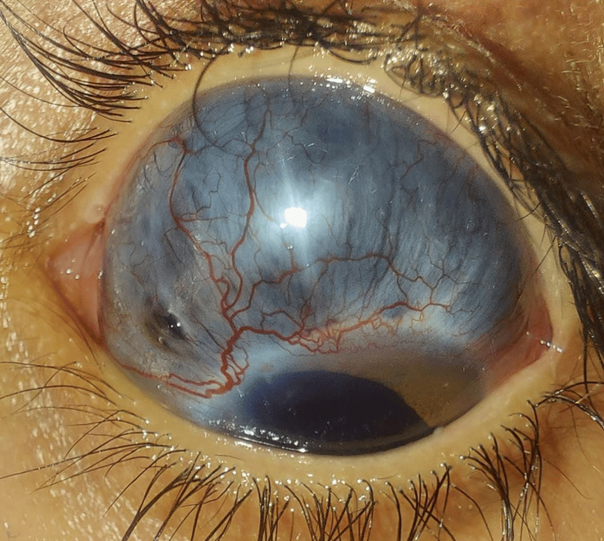

3221 — Viêm củng mạc do nấm sau đặt đai / ống silicon (fungal scleritis over a scleral explant)
Tags: pattern:o-mu-cung-mac pattern:hoai-tu-cung-mac pattern:lo-vat-lieu pattern:dau-sau-mo pattern:tham-nhien-quanh-vat-lieu pattern:nhiem-nam-cung-mac pattern:biofilm vung:mat vung:cung-mac vung:ket-mac protocol:den-khe protocol:cao-cung-mac protocol:deroofing protocol:AS-OCT protocol:UBM protocol:B-scan protocol:cam-mau-cay protocol:Sabouraud protocol:GMS protocol:PAS incidentaloma:khong
Mức chắc chắn (certainty): tổng hợp y văn (literature synthesis) — dựng từ 42 mắt viêm củng mạc nhiễm khuẩn/nấm trong đó 10 mắt do nấm và 18 mắt sau phẫu thuật dịch kính–võng mạc có đai (Middle East Afr J Ophthalmol 2015, PMC4411618, CC BY-NC-SA 3.0); 40 ca viêm củng mạc sau mổ dịch kính/đai ở Moorfields (Eye (Lond) 2025, PMC12209405, CC BY 4.0); 102 mắt tháo đai (Oman J Ophthalmol 2015, PMC4738662, CC BY-NC-SA 3.0); 35 mắt tháo đai / 2.375 mắt đặt đai (Int J Retina Vitreous 2026, PMC13326349, CC BY 4.0); 40 mắt tháo đai (Korean J Ophthalmol 2020, PMC7738227, CC BY-NC 4.0); ca Curvularia trên đai 14 năm (BMC Ophthalmol 2018, PMC5807820, CC BY 4.0); hai bài tổng quan viêm củng mạc nhiễm (PMC12290352, CC BY-NC 4.0; PMC11842368, CC BY 4.0) và cơ chế biofilm trên đai củng mạc (PMC4384075, CC BY 4.0). Nhóm không có bệnh nhân của mình; số nào chưa kiểm chứng ghi "chưa rõ". Không ghi tên tác giả — attribution dùng tạp chí + năm + PMCID.
Câu chốt: Đai/ống silicon là vật liệu ngoại lai nằm sát củng mạc vô mạch — nơi kháng sinh và kháng nấm không tới được vì giới hạn khuếch tán và vì biofilm; nấm lại mọc chậm nên bệnh cảnh điển hình là "đỏ–cộm–chảy mủ dai dẳng nhiều tuần đến nhiều năm sau mổ, kháng sinh không đỡ", và chỉ tháo bỏ vật liệu + cắt lọc mới cắt được nhiễm. Năm con số phải thuộc: (1) nhiễm là lý do tháo đai hàng đầu — 34% ca tháo đai, trung vị 2,4 tháng sau đặt (vs 12,6 tháng ở ca không nhiễm, p = 0,006) (PMC13326349); (2) trong 102 mắt tháo đai, 79,4% lộ đai kèm nhiễm lâm sàng, nhưng nấm chỉ 2,94% (3/102) — hiếm nhưng tiên lượng xấu nhất (PMC4738662); (3) viêm củng mạc sau đai gặp 45/100.000 ca đai/năm (so với 5/100.000 sau cắt dịch kính), xuất hiện muộn (trung vị 33,4 tuần), hoại tử 47% và 59% phải tháo đai (PMC12209405); (4) cấy từ đai/mủ rất hay âm — chỉ 6% (1/17) ca sau đai ở Moorfields dương (PMC12209405), trong khi cấy chính mảnh đai tháo ra cho 88,2% dương (PMC4738662); (5) nấm củng mạc chậm hơn hẳn: 54 ngày triệu chứng trước khi được chẩn đoán và 92 ngày điều trị (so với 29 ngày với tụ cầu) (PMC4411618). Bẫy chết người: corticoid làm bùng phát — ca Aspergillus ở Moorfields được methylprednisolone IV + ciclosporin một tháng trước khi nhận ra nấm (PMC12209405).
1. Tổng quan bệnh học – cơ chế hình ảnh (TẠI SAO)
1.1 Vì sao đúng "đai + nấm" lại thành một ổ nhiễm không tự khỏi
- Củng mạc vô mạch (avascular sclera): nhu mô củng mạc gần như không có mao mạch — nuôi dưỡng nhờ màng bồ đào phía trong và mạng thượng củng mạc (episcleral plexus) rất thưa phía ngoài. Kháng sinh/kháng nấm toàn thân vì thế khuếch tán vào củng mạc kém, và mọi khoang chết quanh vật liệu ngoại lai là "vùng cấm" của thuốc.
- Biofilm: đai silicon/silicone sponge là bề mặt không sống (abiotic) — điều kiện lý tưởng để vi sinh vật bám thành màng sinh học (biofilm); ma trận polymer tạo gradient oxy–dinh dưỡng, vi sinh vật ở sâu chuyển sang trạng thái ngủ/dung nạp thuốc, nên nồng độ ức chế tối thiểu (MIC) đo trong phòng xét nghiệm không dự báo được đáp ứng tại chỗ (PMC4384075). Đây là lý do cơ học của câu "kháng nấm đơn thuần không bao giờ khỏi khi còn đai".
- Vì sao nấm chứ không chỉ vi khuẩn: bào tử nấm trong không khí/bụi/đất bám vào chỉ khâu, sponge, ống silicon trong mổ; corticoid tại chỗ sau mổ làm giảm miễn dịch bề mặt và che dấu viêm; khí hậu nóng ẩm làm tỷ lệ nấm cao hơn hẳn (Ấn Độ: nấm 23,8% ca viêm củng mạc nhiễm — PMC4411618; tổng quan phương Tây: 11–13% — PMC12290352). 40% ca nấm củng mạc đang dùng corticoid tại chỗ/toàn thân lúc nhập viện (PMC4411618).
- Vì sao hoại tử (melt): nấm xâm nhập mạch máu nhỏ của thượng củng mạc → viêm mạch, huyết khối, nhồi máu củng mạc từng ổ → mô chết trắng–vàng, không ngấm fluorescein hoặc mất lớp nhu mô nhìn thấy màng bồ đào xanh xám bên dưới. Trong viêm củng mạc nhiễm nói chung, hoại tử củng mạc gặp ~93%, sung huyết kết mạc ~98% (PMC12290352).
- Vì sao "mủ đen" lại là manh mối: nấm dematiaceous (nấm tối màu) như Curvularia, Alternaria có melanin trong vách → đám mủ/hoại tử nâu–đen chứ không trắng ngà; ca Curvularia trên đai xuất hiện 14 năm sau mổ với "black deposits" trên đai lộ (PMC5807820). Gặp mủ đen quanh vật liệu → nghĩ nấm tối màu, không phải "dịch tiết khô".

- Vì sao hình ảnh "giống SINS/thải ghép" dù là nhiễm: cả hai đều là viêm củng mạc khu trú đúng vị trí mổ, cùng đỏ, cùng đau, cùng có thể hoại tử. Khác biệt không nằm ở hình thái mà ở thời gian – đáp ứng corticoid – kết quả cấy. Trong loạt Moorfields, 62,5% ca viêm củng mạc sau mổ không hoại tử, và chỉ 1/17 (6%) ca sau đai cấy dương — nghĩa là đa số là SINS vô khuẩn, nhưng ca nhiễm nằm trong số đó và không thể loại trừ bằng mắt (PMC12209405).
1.2 Ngưỡng định lượng nằm lòng
| Chỉ số | Giá trị | Nguồn |
|---|---|---|
| Viêm củng mạc nhiễm / tổng ca scleritis | 5–10% | PMC12290352; PMC11842368 |
| Phẫu thuật là yếu tố nguy cơ | 58–83% ca viêm củng mạc nhiễm | PMC12290352 |
| Tác nhân | vi khuẩn 86–87%; nấm 11–13% (Ấn Độ: 23,8%) | PMC12290352; PMC4411618 |
| Dấu lâm sàng | sung huyết kết mạc 98%; hoại tử củng mạc 93% | PMC12290352 |
| Số ổ (42 mắt) | 1 ổ 78,5% · đa ổ 14,2% · lan toả 7,1% | PMC4411618 |
| Chỉ định tháo đai (n = 35/2.375 mắt = 1,5%) | nhiễm 34% · đau 31% | PMC13326349 |
| Thời gian đặt → tháo đai | nhiễm 2,4 tháng vs không nhiễm 12,6 tháng (p = 0,006) | PMC13326349 |
| Tháo đai (n = 102 mắt) | lộ đai + nhiễm 79,4%; nấm 2,94% (3/102); thủng nhãn cầu 13,7%; bong võng mạc tái phát 6,9% | PMC4738662 |
| Viêm củng mạc sau đai (17 ca) | tần suất 45/100.000 ca đai/năm (KTC 95%: 24,4–82,5); xuất hiện 33,4 tuần (trung vị); hoại tử 47%; tháo đai 59%; cấy dương 6%; tái phát 29% | PMC12209405 |
| Viêm củng mạc sau cắt dịch kính (23 ca) | 5/100.000 ca/năm (3,4–7,5); xuất hiện 3,6 tuần; hoại tử 26% | PMC12209405 |
| Nấm củng mạc (10 mắt) | triệu chứng 31,8 ± 34,5 ngày chung, nấm 54 ngày; điều trị 92 ngày (20 ngày–1 năm); tái phát 3/10; corticoid lúc vào 40% | PMC4411618 |
| Kết cục nấm củng mạc | BCVA > 6/18: 41,6%; 6/18–6/60: 33%; < 6/60: 25%; múc nội nhãn ~13% | PMC12290352 |
| Bong võng mạc sau tháo đai | 10% (4/40); đai vòng 25% (4/16) vs đai đoạn 0% (0/24), p = 0,020 | PMC7738227 |
| Bong võng mạc sau tháo đai (loạt 2026) | 11% (4/35); 3/4 ca xảy ra khi tháo trong tháng đầu | PMC13326349 |
| Lộ đai KHÔNG nhiễm (n = 40) | 57,5% ca tháo đai; lộ đai + nhiễm 17,5% | PMC7738227 |
2. Mẫu hình + chẩn đoán phân biệt (gamut)
Mẫu hình "nấm trên đai": mắt đã đặt đai/ống silicon (thường nhiều tháng đến nhiều năm trước), đỏ–cộm–chảy mủ tái diễn, kháng sinh nhỏ nhiều đợt không khỏi; trên đèn khe: đai lộ ra (qua kết mạc mỏng/khuyết), quanh đai mủ trắng ngà hoặc nâu đen, củng mạc hoại tử trắng–vàng, mủ tiền phòng nhẹ; đau ít hơn vẻ ngoài vì mắt đã nhiều lần mổ; B-scan sạch (chưa nội nhãn).
- Gamut theo vật liệu:
- Đai củng mạc (scleral buckle) — silicon sponge/tire, dễ lộ–di lệch–nhiễm nhất; đây là gamut chính của bài này.
- Ống silicon dẫn lưu (glaucoma drainage device) — nhiễm muộn quanh bản/ống, có thể có màng biofilm dày.
- Dầu silicon nội nhãn (silicone oil) — mặt vô khuẩn của cùng câu chuyện: u hạt phản ứng dị vật (foreign-body granuloma) ở sclerotomy/kết mạc ("salmon patch"), không có mủ, không có nấm, đáp ứng với cắt bỏ chứ không phải kháng sinh (PMC9365975).
- Chỉ khâu/vòng — ổ nhỏ quanh nút chỉ, thường tụ cầu.
- Gamut theo tác nhân (nấm): Aspergillus (được nêu là tác nhân nấm hay gặp nhất trong viêm củng mạc nhiễm — tổng quan PMC3821753), Curvularia/nấm tối màu ("mủ đen" — PMC5807820), Scedosporium, Fusarium, Candida (thường từ mảnh ghép/nhiễm nội sinh), Paecilomyces.
- Gamut theo hình thái ổ: 1 ổ (78,5%) → đa ổ (14,2%) → lan toả toàn vùng rìa (7,1%) (PMC4411618, toàn bộ 42 mắt). Đa ổ/lan toả gợi ý nhiễm hơn là SINS; 1 ổ đúng trên đai gợi ý cả hai.
- Gợi nhớ BUCKLE: Biofilm (màng sinh học trên vật liệu) · Unvascular sclera (củng mạc vô mạch) · Corticosteroid (corticoid che dấu + làm nặng) · Keratitis/conjunctival breakdown (kết mạc mỏng là cửa vào) · Late & long (biểu hiện muộn, diễn tiến dài) · Explant (phải lấy vật liệu).

3. Bảng so sánh phân biệt (ma trận đối chiếu)
| Thực thể (entity) | Hình ảnh điển hình (đèn khe / AS-OCT / B-scan) | Chốt vào (rule-in) | Chốt loại (rule-out) | Gợi ý xác nhận |
|---|---|---|---|---|
| Nấm củng mạc trên đai | Đai lộ + mủ trắng ngà/nâu đen, củng mạc hoại tử từng ổ, đa ổ 14,2%; tiến triển nhiều tuần–năm; B-scan sạch | Vật liệu ngoại lai + đỏ/mủ dai dẳng > 4 tuần + kháng sinh thất bại; GMS/PAS thấy sợi nấm hoặc cấy Sabouraud dương | Khởi phát < 1 tuần + mủ vàng xanh + đau nhiều → nghĩ vi khuẩn; đáp ứng corticoid trong 1–2 tuần → nghĩ SINS | Deroofing + cạo bờ ổ + cấy đai, Sabouraud 22–25 °C giữ ≥ 2 tuần, GMS/PAS; cấy chính đai (88,2% dương — PMC4738662) |
| Vi khuẩn (Pseudomonas/Staph) | Mủ vàng–xanh, tan chảy nhanh ngày, đau nhiều, mủ tiền phòng sớm; hay quanh chỉ khâu | Khởi phát ngày + mủ xanh + Gram dương/âm trên smear | Tiến triển tuần–tháng, bờ khô, mủ nâu đen → không phải vi khuẩn thường | Gram + cấy; chính loạt tháo đai cho S. epidermidis 41,2% (PMC4738662) |
| NTM (M. chelonae/M. abscessus) | Ổ dai dẳng, ít mủ, nhiều nốt nhỏ, có thể viêm mô tế bào hốc mắt; đáp ứng kém kháng sinh thường | Thất bại nhiều đợt kháng sinh + cấy Gram "câm"; ZN/auramine dương | Cấy nấm dương + sợi nấm trên GMS → loại NTM | Cấy mycobacteria 37 °C ≥ 4 tuần, PCR rpoB; tháo đai + phác đồ nhiều thuốc (PMC12085144) |
| Nocardia | Áp-xe có điểm nhọn (pointed abscess), đa ổ, lan theo đường mạch; hay sau chấn thương đất/cây | Điểm nhọn + đa ổ + Gram dương hình sợi phân nhánh; không đáp ứng kháng sinh thường | Sợi nấm có vách trên GMS → nấm thật, không phải Nocardia | Nonnutrient agar + E. coli overlay, kháng sinh đồ; amikacin |
| SINS (viêm củng mạc hoại tử sau mổ, vô khuẩn) | Hoại tử đúng vết mổ, bờ trắng–xám, không mủ, không tấy; 62,5% ca sau mổ không hoại tử | Không đau tương xứng + cấy âm + đáp ứng corticoid/NSAID; xuất hiện muộn (33,4 tuần sau đai) | Mủ + hoại tử lan + cấy nấm dương → nhiễm; tăng corticoid làm nặng → nhiễm | Cấy + GMS trước khi tăng corticoid; AS-OCT đo độ dày; theo dõi 1–2 tuần (PMC12209405) |
| U hạt dị vật do dầu silicon (vô khuẩn) | Nốt hồng–salmon dưới kết mạc ở sclerotomy, không mủ, không hoại tử; tiền sử dầu silicon | Nốt ở sclerotomy + không mủ + cấy âm + tiền sử dầu silicon | Mủ + hoại tử củng mạc + sợi nấm → nhiễm | Sinh thiết: đại bào + giọt dầu; cắt bỏ là điều trị (PMC9365975) |
| Lộ đai đơn thuần (không nhiễm) | Đai lộ nhưng kết mạc quanh còn trong, chỉ cộm–vướng | Lộ đai + không mủ + cấy âm + không hoại tử | Đỏ tím lan + mủ + hoại tử → không phải "lộ đơn thuần" | Theo dõi; 57,5% ca tháo đai vì lộ đơn thuần (PMC7738227) |
| Viêm nội nhãn (endophthalmitis) | Mủ tiền phòng dày, fibrin, giảm thị lực nhanh; B-scan có dày dịch kính/hạt | Thị lực tụt nhanh + mủ tiền phòng + B-scan bất thường | B-scan sạch + thị lực ổn định | B-scan mọi ca; nếu có → cắt dịch kính + tiêm nội nhãn, không chỉ tháo đai |
Dấu hiệu đọc ảnh theo thứ tự (đừng bỏ bước)
- Vật liệu có lộ không — lộ là điều kiện cần, không phải điều kiện đủ (lộ đơn thuần 57,5% ca tháo đai — PMC7738227).
- Quanh vật liệu có mủ/hoại tử không — mủ + hoại tử mới là "nhiễm", và màu mủ đổi chẩn đoán (nâu đen → nấm tối màu).
- Bề dày củng mạc còn lại (AS-OCT/UBM) — quyết định có cần mảnh ghép củng mạc hay không.
- Tiền phòng và dịch kính (B-scan) — quyết định có phải mổ nội nhãn.
4. Protocol chụp/xét nghiệm + phân tầng + flowchart
4.1 Quy trình tối thiểu khi nghi nhiễm quanh đai
- Ảnh đèn khe chuẩn hoá mỗi 24–72 giờ: đo diện tích hoại tử (mm²), ghi màu mủ, số ổ, độ lộ của đai (mm), mủ tiền phòng (mm).
- B-scan mọi ca: loại viêm nội nhãn; ghi dày dịch kính/hạt.
- AS-OCT/UBM khi cần đo độ dày củng mạc còn lại và độ sâu ổ trước khi cắt lọc/ghép.
- Cạo/deroofing để lấy bệnh phẩm TRƯỚC khi nhỏ thêm thuốc: deroofing nốt hoặc cắt lọc ổ loét tới củng mạc lành (kỹ thuật: rạch kết mạc quanh tổn thương, deroof bằng lưỡi 15, lấy mô hoại tử, cạo đáy và bờ) — vừa chẩn đoán vừa giảm tải nấm (PMC4411618).
- Cấy trên bộ môi trường đầy đủ: thạch máu, thạch chocolate, Sabouraud dextrose (22–25 °C), potato dextrose, BHI, thioglycollate, nonnutrient agar + E. coli overlay (cho Nocardia); cấy chính đai/ống tháo ra — đây là mẫu cho độ nhạy cao nhất (88,2%) (PMC4738662).
- Nhuộm: Gram, Giemsa, GMS (Grocott), PAS trên mô cắt lọc; ZN/auramine nếu nghi NTM/Nocardia.
- CT hốc mắt có cản quang khi có lồi mắt, hạn chế vận nhãn, đau hốc mắt — tìm viêm mô tế bào hốc mắt (đã gặp với M. abscessus trên đai — PMC12085144).
- Hỏi thuốc: corticoid tại chỗ/toàn thân, số đợt kháng sinh đã dùng, thời điểm mổ đặt đai, vật liệu (sponge/tire/vòng/ống).
4.2 Phân tầng thực hành (không phải thang điểm đã validate)
| Tầng | Dấu hiệu | Ngưỡng / hành động |
|---|---|---|
| 1 — Lộ đai, chưa nhiễm | Đai lộ, không mủ, không hoại tử, cấy âm | Vệ sinh, kháng sinh dự phòng, theo dõi 1–2 tuần; chưa tháo đai vì nguy cơ bong võng mạc |
| 2 — Nhiễm nông quanh vật liệu | Mủ quanh đai, hoại tử < 3 mm, chưa vào tiền phòng | Deroofing + cạo + cấy, kháng sinh/kháng nấm tại chỗ; khám lại 48–72 giờ |
| 3 — Nhiễm có hoại tử củng mạc | Hoại tử ≥ 3 mm, mủ tiền phòng, đau tăng dù điều trị | Tháo đai + cắt lọc tới củng mạc lành + kháng nấm toàn thân; cân nhắc mảnh ghép củng mạc |
| 4 — Doạ thủng / thủng / nội nhãn / hốc mắt | Lộ màng bồ đào, thủng, B-scan bất thường, lồi mắt/hạn chế vận nhãn | Mổ cấp: tháo đai + cắt lọc + ghép củng mạc/màng ối; cắt dịch kính + tiêm nội nhãn nếu nội nhãn; kháng sinh/kháng nấm toàn thân + CT hốc mắt |
- Nguồn của ngưỡng: tháo đai 59% ca viêm củng mạc sau đai và 3/4 ca bong võng mạc tái phát xảy ra khi tháo trong tháng đầu → tháo sớm khi chưa cần là đánh đổi có thật (PMC12209405, PMC13326349); cấy đai cho 88,2% dương (PMC4738662); corticoid đang dùng ở 40% ca nấm (PMC4411618). Các mốc 3 mm hoại tử và 48–72 giờ là phân tầng thực hành tự biên — trao đổi trực tiếp với phẫu thuật viên, không phải tiêu chuẩn chốt.
4.3 Điều trị — nguyên tắc, thuốc, liều
- Nguyên tắc số 1: lấy vật liệu. In vitro không có "kháng nấm nào phá được biofilm trên đai"; loạt 102 mắt cho thấy tháo đai + cắt lọc là điểm chuyển của hầu hết ca (PMC4738662), và 59% ca viêm củng mạc sau đai phải tháo đai (PMC12209405).
- Kháng nấm tại chỗ: natamycin 5% mỗi 30 phút–1 giờ (phác đồ của loạt 10 mắt nấm — PMC4411618); amphotericin B 0,15% thay thế; voriconazole 1% khi nghi Aspergillus/Scedosporium.
- Kháng nấm toàn thân: ketoconazole 200 mg × 2/ngày (phác đồ loạt Ấn Độ — PMC4411618); itraconazole khi tái phát; voriconazole là lựa chọn hiện hành cho Aspergillus (khuyến cáo tổng quan — PMC11842368). Thời gian: trung bình 92 ngày (20 ngày–1 năm) trong loạt nấm — dài gấp ~3 lần tụ cầu (29 ngày) (PMC4411618).
- Cắt lọc lặp lại: nhiều lần ở nấm để giảm tải và tăng thấm thuốc (PMC4411618); ghép củng mạc/màng ối khi doạ thủng — 5% ca sau đai cần mảnh ghép củng mạc (PMC12209405), 23,5% trong loạt viêm củng mạc nhiễm nói chung (PMC3227473).
- Corticoid: không khởi trị trước khi loại nhiễm; nếu đang dùng → giảm liều từ từ cùng kháng nấm, không cắt đột ngột (bùng phát). Ca Aspergillus ở Moorfields là bài học ngược: được methylprednisolone IV + ciclosporin một tháng vì "SINS" trước khi nhận ra nhiễm nấm (PMC12209405).
flowchart TD
A["Đỏ, cộm, chảy mủ quanh đai hoặc ống silicon, kéo dài nhiều tuần"] --> B["Đèn khe: đai có lộ? mủ màu gì? hoại tử củng mạc mấy mm?"]
B --> C["B-scan: loại viêm nội nhãn; AS-OCT/UBM: độ dày củng mạc còn lại"]
C --> D["Deroofing hoặc cắt lọc tới củng mạc lành: Gram, Giemsa, GMS, PAS, ZN"]
D --> E["Cấy: máu, chocolate, Sabouraud 22-25 độ, BHI, thioglycollate, nonnutrient agar + E. coli"]
E --> F{"Có sợi nấm trên GMS/PAS hoặc cấy nấm dương?"}
F -->|Có| G["Nấm: natamycin 5% hoặc amphotericin B 0,15% tại chỗ + kháng nấm toàn thân"]
F -->|"Không, nhưng mủ và hoại tử vẫn tiến triển"| H["Vẫn coi là nhiễm: cấy lại + cấy chính đai khi tháo"]
G --> I{"Hoại tử tăng, mủ tiền phòng, hay doạ thủng?"}
H --> I
I -->|Không| J["Theo dõi 48-72 giờ; kháng nấm kéo dài, không giảm liều sớm"]
I -->|Có| K["Tháo đai hoặc ống + cắt lọc tới củng mạc lành"]
K --> L{"Củng mạc còn đủ dày?"}
L -->|Không| M["Ghép củng mạc hoặc màng ối"]
L -->|Có| N["Để hở có kiểm soát, kháng sinh và kháng nấm tại chỗ"]
M --> O["Theo dõi bong võng mạc: nguy cơ cao nếu tháo trong tháng đầu hoặc đai vòng"]
N --> O
O --> P{"B-scan có bất thường hoặc lồi mắt?"}
P -->|Có| Q["Cắt dịch kính + tiêm nội nhãn; CT hốc mắt, kháng sinh toàn thân"]
P -->|Không| R["Khám lại 1-2 tuần; kháng nấm duy trì nhiều tuần sau khi hết mủ"]
4.4 Khi nào KHÔNG tháo đai
- Lộ đai đơn thuần, không mủ, không hoại tử, cấy âm → 57,5% ca tháo đai trong loạt 40 mắt là vì lý do này, và tháo đai mang theo 10–11% nguy cơ bong võng mạc tái phát (PMC7738227, PMC13326349). Theo dõi + vệ sinh trước.
- Đai vòng (encircling) → nguy cơ bong 25% (4/16) so với 0% với đai đoạn (PMC7738227) — nếu buộc phải tháo, chuẩn bị tái thông và hẹn theo dõi sát.
- Mắt độc nhất, thị lực còn tốt, tổn thương nông → cân nhắc deroofing + kháng nấm trước, tháo đai khi thất bại 1–2 tuần.
- Chưa loại nội nhãn → B-scan trước; nội nhãn phải xử lý bằng cắt dịch kính, không chỉ tháo đai.
5. Biến thể bình thường và cạm bẫy
- "Đai lộ là phải tháo" — sai: lộ đai không nhiễm chiếm 57,5% ca tháo đai ở một loạt, nghĩa là phần lớn ca tháo không phải vì nhiễm (PMC7738227); trong loạt Moorfields 59% ca viêm củng mạc sau đai có tháo đai, nhưng 6/17 ca không nhiễm (PMC12209405).
- "Cấy âm là loại trừ nấm" — sai nặng: chỉ 1/17 (6%) ca sau đai ở Moorfields cấy dương, và ca Aspergillus nằm trong nhóm cấy âm/không nghĩ tới (PMC12209405). Cấy chính mảnh đai cho 88,2% dương (PMC4738662) — vật liệu tháo ra là bệnh phẩm, đừng bỏ.
- "Đau nhiều mới là nhiễm" — sai: nấm củng mạc diễn tiến chậm (triệu chứng 54 ngày trước chẩn đoán), đau có thể âm ỉ vì mắt đã nhiều lần mổ (PMC4411618).
- Corticoid — bẫy số 1: làm giảm đau và giảm đỏ tạm thời, khiến bác sĩ tưởng "SINS đáp ứng thuốc", trong khi nấm lan theo chiều sâu; ca Moorfields được methylprednisolone IV + ciclosporin cả tháng trước khi chẩn đoán (PMC12209405). Quy tắc: không tăng corticoid khi chưa có GMS/cấy âm.
- "Mủ đen là máu khô/dị vật" — có thể là nấm tối màu (dematiaceous): ca Curvularia có black deposits trên đai lộ 14 năm sau mổ, và cấy ra nấm (PMC5807820).
- Bỏ sót "satisfaction of search": thấy đai lộ rồi dừng — quên B-scan (nội nhãn), quên cấy đai, quên khám hốc mắt (viêm mô tế bào — PMC12085144), quên mảnh ghép củng mạc khi đã lộ màng bồ đào.
- Nhầm với SINS rồi tăng corticoid — SINS là chẩn đoán loại trừ: viêm củng mạc sau mổ 62,5% không hoại tử, xuất hiện muộn 33,4 tuần, và cấy âm ở đa số; nhưng "đa số vô khuẩn" không cho phép bỏ qua ca nhiễm (PMC12209405).
- Silicone oil ≠ đai: nốt salmon ở sclerotomy sau dầu silicon là u hạt dị vật vô khuẩn — cắt bỏ, không kháng sinh (PMC9365975). Gọi nhầm là nhiễm → kháng sinh dài vô ích; gọi nhầm u hạt là "nhiễm" khi có mủ thật → bỏ sót nấm.

6. Tự lượng giá — Blind Quiz ngay trên trang tĩnh
Ca 1 — "đai lộ 14 năm, mủ đen, đã nhỏ kháng sinh 4 tuần không đỡ"
- Gợi ý lâm sàng: nam 45 tuổi, mổ bong võng mạc 14 năm trước, mắt không còn nhận biết ánh sáng; đỏ–cộm–chảy mủ 1 tháng; khám thấy đai lộ, di lệch ra trước.
- Câu hỏi: (a) Dấu nào trong ảnh khiến nghĩ nấm hơn vi khuẩn? (b) Vì sao 14 năm mới biểu hiện? (c) Bước điều trị quyết định là gì?
Bấm để hiện đáp án (findings + chẩn đoán)
- (a) Mủ/hoại tử NÂU–ĐEN phủ trên đai (ảnh b) — sắc tố melanin của nấm tối màu (dematiaceous), khác mủ vàng–xanh của vi khuẩn; kết mạc quanh đai đỏ tím nhưng không tan chảy nhanh.
- (b) Vì biofilm trên silicon: bào tử bám từ lúc mổ, tồn tại nhiều năm ở trạng thái ngủ, bùng phát khi kết mạc mỏng/lộ đai (PMC4384075); ca này 14 năm sau mổ (PMC5807820).
- (c) Tháo đai + gửi chính đai đi cấy + kháng nấm (ca gốc: tháo đai rồi điều trị kháng nấm thành công — PMC5807820). Không có đai thì kháng nấm không thể diệt biofilm.

- Nguồn ảnh: BMC Ophthalmol 2018, Fig. 1 và Fig. 2 (PMC5807820), CC BY 4.0.
Ca 2 — lộ đai: nhiễm hay không nhiễm?
- Gợi ý lâm sàng: cả hai mắt đều có đai lộ; một mắt chỉ cộm–vướng, mắt kia đỏ–đau–chảy mủ.
- Câu hỏi: (a) Ảnh nào là nhiễm? (b) Dấu hiệu nào phân biệt? (c) Vì sao không tháo đai ngay ở mắt không nhiễm?
Bấm để hiện đáp án (findings + chẩn đoán)
- (a) Ảnh phải — lộ đai có nhiễm: kết mạc quanh đai đỏ tím, phù, có mủ; ảnh trái: kết mạc còn trong, đai lộ cơ học.
- (b) Mức viêm quanh vật liệu + mủ, không phải "đai có lộ". Lộ đơn thuần 57,5% ca tháo đai; lộ + nhiễm 17,5% (PMC7738227).
- (c) Tháo đai mang 10–11% nguy cơ bong võng mạc tái phát, và 3/4 ca bong xảy ra khi tháo trong tháng đầu (PMC7738227, PMC13326349); đai vòng còn 25%. Vì thế chỉ tháo khi có nhiễm/hoại tử/doạ thủng.
- Nguồn ảnh: Oman J Ophthalmol 2015, Fig. 1–2 (PMC4738662), CC BY-NC-SA 3.0 — ảnh ghép letterbox.
Ca 3 — nấm củng mạc được chẩn đoán sau nhiều tuần "viêm củng mạc"
- Gợi ý lâm sàng: bệnh nhân trong loạt 10 mắt nấm củng mạc; 40% đang dùng corticoid lúc vào; triệu chứng kéo dài trung bình 54 ngày.
- Câu hỏi: (a) Ảnh (b) là gì và thấy gì? (b) Vì sao không được tăng corticoid ở thời điểm này? (c) Hai việc phải làm cùng lúc với deroofing?
Bấm để hiện đáp án (findings + chẩn đoán)
- (a) GMS (Grocott methenamine silver) của mô củng mạc cắt lọc — sợi nấm (sao trắng) nhuộm đen trên nền xanh; đây là chốt mô học.
- (b) Corticoid che dấu và làm nặng nhiễm nấm; ca Aspergillus ở Moorfields được methylprednisolone IV + ciclosporin cả tháng trước khi chẩn đoán (PMC12209405). Chỉ dùng corticoid sau khi đã kiểm soát nhiễm và giảm liều từ từ.
- (c) (1) Gửi cạo + mô cắt lọc đi Gram/Giemsa/GMS/PAS và cấy Sabouraud 22–25 °C (giữ ≥ 2 tuần); (2) khởi kháng nấm tại chỗ (natamycin 5% mỗi 30 phút–1 giờ) ± toàn thân (ketoconazole/voriconazole), đồng thời chuẩn bị tháo đai nếu đai còn.
- Nguồn ảnh: Middle East Afr J Ophthalmol 2015, Fig. 1 (PMC4411618), CC BY-NC-SA 3.0.
Ca 4 — hoại tử củng mạc rộng sau mổ dịch kính, "đã hết nhiễm"

- Gợi ý lâm sàng: nam 45 tuổi, đái tháo đường, mổ dịch kính vì bong võng mạc biến chứng; 3 tháng sau mổ đỏ–đau tăng dần.
- Câu hỏi: (a) Mô tả tổn thương? (b) Chẩn đoán phân biệt hai đầu? (c) Dấu hiệu nào bắt buộc phải mổ/mảnh ghép ngay?
Bấm để hiện đáp án (findings + chẩn đoán)
- (a) Hoại tử củng mạc lan (scleromalacia pre-perforans): vùng củng mạc mỏng trắng–xám, thấy màu màng bồ đào bên dưới, bờ không đều, quanh vùng mổ.
- (b) SINS (vô khuẩn) vs nhiễm (nấm/NTM/vi khuẩn) — phân biệt bằng cấy + GMS và đáp ứng điều trị, không bằng hình thái; ở đây bệnh nhân đái tháo đường là yếu tố nguy cơ cho cả hai.
- (c) Lộ màng bồ đào/doạ thủng → cắt lọc + ghép củng mạc hoặc màng ối ngay, kèm kháng sinh/kháng nấm theo cấy; đừng chờ "hết viêm" vì củng mạc đã mất lớp chịu lực.
- Nguồn ảnh: Cureus 2025, Fig. 1 (PMC12104689), CC BY 4.0.
7. Câu hỏi nghiên cứu & điểm chưa đồng thuận (tính đến 11/2026)
[Tranh cãi] Ở viêm củng mạc nấm quanh đai, tháo vật liệu NGAY có tốt hơn thử kháng nấm + cắt lọc trước?
- Đã biết: 59% ca viêm củng mạc sau đai phải tháo đai, và phần lớn ca nhiễm chỉ ổn định sau khi tháo (PMC12209405); loạt 102 mắt coi tháo đai + cắt lọc là chuẩn (PMC4738662); nhưng tháo đai mang 10–11% nguy cơ bong võng mạc, 25% nếu là đai vòng (PMC7738227, PMC13326349).
- Chưa rõ: không có RCT so tháo sớm vs kháng nấm + cắt lọc trước; chưa rõ ngưỡng diện tích hoại tử nào thì lợi ích tháo vượt nguy cơ bong.
- Hướng nghiên cứu: đoàn hệ tiến cứu phân tầng theo diện tích hoại tử (mm²) + loại đai (vòng/đoạn), outcome giữ nhãn cầu, thị lực, bong võng mạc.
- Nguồn: PMC12209405; PMC4738662; PMC7738227.
[Khoảng trống] Có xét nghiệm nào đủ nhạy để chẩn đoán nấm củng mạc mà không cần cấy dương?
- Đã biết: cấy từ đai/mủ rất hay âm (6%, 1/17 — PMC12209405) trong khi cấy chính mảnh đai cho 88,2% (PMC4738662); GMS/PAS trên mô cắt lọc là chốt mô học (PMC4411618); nấm củng mạc chậm (54 ngày) và điều trị 92 ngày (PMC4411618).
- Chưa rõ: vai trò PCR pan-fungal/ITS trên mô cắt lọc và trên biofilm đai chưa được đánh giá tiền cứu; chưa có cut-off số sợi nấm/mật độ trên GMS.
- Hướng nghiên cứu: nghiên cứu diagnostic accuracy mù, so PCR ITS + NGS với cấy mảnh đai trên cùng mẫu, tính Se/Sp theo từng loài.
- Nguồn: PMC12209405; PMC4738662; PMC4411618.
[Khác biệt thực hành] Thời điểm và cách tháo đai khi có nhiễm: tháo "toàn bộ + cắt lọc" hay "cắt bớt + giữ đai" ở mắt độc nhất?
- Đã biết: 79,4% ca tháo đai vì lộ đai kèm nhiễm; thủng nhãn cầu 13,7% và bong võng mạc 6,9% sau tháo (PMC4738662); 3/4 ca bong xảy ra khi tháo trong tháng đầu (PMC13326349).
- Chưa rõ: chưa có dữ liệu cho chiến lược cắt bớt đai (partial buckle removal) hoặc giữ đai + bọc màng ối ở mắt độc nhất; thực hành khác nhau rõ giữa trung tâm (Moorfields tháo 59%, Ấn Độ tháo gần như toàn bộ ca lộ đai).
- Hướng nghiên cứu: khảo sát thực hành đa trung tâm + đoàn hệ mắt độc nhất, outcome giữ nhãn cầu/thị lực/bong võng mạc.
- Nguồn: PMC4738662; PMC13326349; PMC12209405.
Bài liên quan chéo
- 400 – Tổng quan Mắt & thị giác
- 3217 – Viêm củng mạc do nấm sợi sau pterygium: hoại tử bờ toả tua
- 3216 – Viêm giác mạc do nấm sợi: bờ lông vũ + vệ tinh + mảng nội mô
- 3214 – Viêm củng mạc do Nocardia: áp-xe điểm nhọn, đa ổ
- 3215 – NTM viêm củng mạc sau pterygium: cấy "câm", ZN dương
- 3210 – Viêm củng mạc hoại tử sau tiêm triamcinolone: corticoid là bẫy
- 3203 – Đe dọa thủng & thủng giác mạc: keo, màng ối, nút Tenon hay ghép xuyên
- 3218 – Lác trong sau đai vòng củng mạc: mổ cơ trên mắt đã đai
- 3213 – Bong võng mạc sau Preserflo MicroShunt
- 3220 – Viêm giác mạc do nấm men Candida: IVCM bào tử 2–5 µm
Ảnh
- Tên file:
3221_<slug>_<mô tả>_<PMCID>.jpg. Nguồn + giấy phép từng ảnh trongimages/CREDITS.md. - 4 ảnh gốc + 1 ảnh ghép: 2 ảnh CC BY 4.0 (PMC5807820, PMC12104689), 1 ảnh CC BY-NC-SA 3.0 (PMC4411618), 1 ảnh ghép từ CC BY-NC-SA 3.0 (PMC4738662 — chia sẻ tương tự, ghi nguồn đầy đủ).
- Không tải ảnh từ bài CC BY-NC-ND (PMC7966824) — chỉ trích số liệu mô tả.
Không dùng để chẩn đoán độc lập khi chưa có người hướng dẫn.